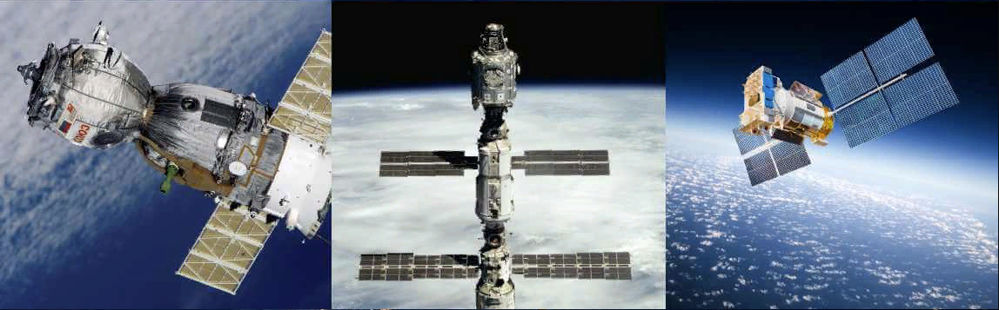

Космические летательные аппараты
Что же из себя представляет космический летательный аппарат?
Космический аппарат (КС) - это общее название технических устройств,
используемых для выполнения разнообразных задач в космическом пространстве, а также
проведения исследовательских и иного рода работ на поверхности небесных тел.
Подразделяются на непилотируемые (ИСЗ, АМС) и пилотируемые космические аппараты (космический корабль, орбитальная станция).
Средствами доставки космических аппаратов на орбиту служат ракеты-носители или самолёты.
Общая информация
Области использования космических аппаратов обуславливают их разделение по следующим группам:
- суборбитальные;
- околоземные орбитальные;
- межпланетные;
- напланетные.
Часто говорят, что:
Название «Космический летательный аппарат» иногда также используется для обозначения активных (то есть маневрирующих) ИСЗ,
с целью подчёркивания их отличий от пассивных спутников. В большинстве же случаев значения терминов «Космический летательный аппарат»
и «Космический аппарат» синонимичны и взаимозаменяемы.
Классификация
- По режиму работы различают следующие типы космических аппаратов:
- искусственные спутники Земли
- — общее название всех аппаратов, находящихся на геоцентрической орбите,
- — или по-другому, вращающихся вокруг Земли.
- автоматические межпланетные станции
- — аппараты, осуществляющие перелёт между Землёй и другими космическими телами Солнечной системы
- — также аппараты, осущствляющие полёт в межзвёдном пространстве
- космические корабли
- — используются для доставки грузов и человека на орбиту Земли;
существуют планы полётов на орбиты других планет
- орбитальные станции
- — аппараты, предназначенные для долговременного пребывания и работы людей на орбите Земли
- спускаемые аппараты
- — используются для спуска полезной нагрузки с орбиты искусственного спутника или с межпланетной траектории и мягкой посадки на поверхность Земли либо другого небесного тела
- планетоходы
- — автоматические лабораторные комплексы или транспортные средства, для перемещения по поверхности планеты и другого небесного тела
- По наличию функции возвращения:
- возвращаемые;
- невозвращаемые.
- По выполняемым функциям выделяют следующие классы:
- метеорологические
- навигационные
- спутники связи, телевещания, телекоммуникационные спутники
- научно-исследовательские
- разведывательные и военные спутники
- другие
Пример использования sub, а такжеsup
Пример использования тега cite
Моя любимая книга - это Мастер и Маргарита
Навигация
- К заголовоку
- К общей информации
- К классификации

Позвонить
Написать письмо